Wenn man an Veganismus denkt, kommen sofort Pflanzen und allgemein etwas grünes in den Kopf. Wir finden, das ist ein sehr eintöniges Vorurteil und wollen mit unserer Website den Menschen zweigen, das vegane Ernährung nicht nur grün und eintönig ist, sondern bunt und voller Spaß am Essen und Kochen. Dies soll auch das Design unserer Website wieder spiegeln. Sie ist bunt, lebendig und soll mit ihrer Einzigartigkeit in den Köpfen bleiben und viele Menschen vom Veganismus und explizit von leckeren veganen Rezepten überzeugen.
Bei der Typografie haben wir uns bewusst für eine außergewöhnliche und eine prägende Schrift entschieden. Die Überschriften sollen, wie auch schon die Farben spaßig, lebendig aber auch freundlich und einladend wirken. Für die Fließtexte haben wir eine einfache Schrift gewählt, damit möglichst viele Menschen sie möglichst einfach lesen können.
Wir haben uns für das Styletile entschieden, da es beide anderen Styletiles schön kombiniert hat und sehr rund wirkt. so haben wir die Freiheit des einen und die Farbenfrohheit des anderen.
"Another Nothing" - verwendet für H1 und H2 (Seitentitel und Rezeptnamen)
“PT Sans Narrow” - verwendet für Fließtext, Navigationsleiste und Zwischenüberschriften
Der Zeilenabstand (line-height) ist auf 1.6 gesetzt, da es bei dunklen Hintergründen wichtig, dass der Text nicht zu nah aneinander steht, damit man ihn mühelos und fließend lesen kann.
Wir haben uns bewusst für sehr knallige Farben entschieden um den Spaß und die Freude, die man beim Kochen haben kann, aber auch um die Vielfältigkeit der veganen Küche, zu unterstreichen. Im Hintergrund haben wir uns für ein schwarz entschieden, da darauf die Farben durch den starken Kontrast noch einmal stärker wirken und leuchten. Die Discokugel (das Logo) soll das alles noch einmal unterstreichen. Die Website soll sich anfühlen wir eine Party, wie ein kulinarisches Fest. Sie soll deutlich machen, dass Veganismus kein Verzicht ist.
Das Farbkonzept der Website basiert auf vier Paaren, jeweils eine dunkle und eine helle Abstufung einer Farbe. Die Farben werden im CSS als Variablen definiert und Seitenübergreifend auf der gesamten Website benutzt.
Unser gesamtes Layout auf der Website basiert auf dem CSS-Grid. Alle Anordnungen, wie Navigation, Header und Rezeptkacheln, werden über “display: grid” gelöst. Der Grundzustand der Website ist zum größten Teil ein einspaltiges Layout (Mobile). Nur die Navigation hat auch schon beim mobile Screen mehrere Spalten.
Ein zentrales und erkennbares Gestaltungsmittel der Website sind die kreisförmigen Bilder. Sie sind auf jeder Seite wiederzufinden. Dazu haben wir uns entschieden, da die meisten Teller von denen man isst, rund sind. Auf der Index-Seite, sowie auf den Rezept-Seiten sieht man so immer als erstes das abgebildete Gericht von Oben. Dies macht die ganze Website außergewöhnlich, interessant und fördert die Aufmerksamkeit ihrer Besucher.
Bei der Textbreite des Fließtextes “p” haben wir uns für ein einheitliches Verhältnis entschieden. Im mobile Zustand ist die maximale Breite auf 800px gesetzt. Zudem gibt es ein Padding außen herum, damit der Text nicht direkt am Rand hängt.
Auf der Startseite und der Seite “Das sind Wir” haben wir uns für ein über die ganze Breite gestrecktes Banner entschieden, welches auf den Seiten unter dem Header liegt. Die Bilder im Banner wurden mit “background-image” eingefügt.
Bei der Website haben wir mit dem moblie screen angefangen. Das ist die kleinste und schmalste Version von der Website. Anpassungen für die größeren Bildschirme werden nur im Block “@media (min-width: ) definiert.
Ab 775px Bildschirmbreite wechselt das Raster von ein- auf zweispaltig. Es wird nicht mehr alles untereinander angepasst. Wir nutzen den neuen Raum, den wir auf der Website finden. Auf der Startseite werden die Bilder und Schriften jetzt nicht mehr untereinander gesetzt, sondern die Schrift wandern rechts neben das Bild. Zusätzlich kommt noch Angaben über das Rezept hinzu.
Ab 1160px Bildschirmbreite wechselt das Layout der Website zum Fullscreen-Layout. Hier wird das Layout wieder dem Mobilen ähnlicher. Um platzsparend mehr Rezepte abzubilden, kommt die Schrift wieder unter die Bilder, da wir so mehrere Rezepte in eine Reihe schieben können und trotzdem noch klar erkennbar ist, welcher Text zu welchem Bild gehört.
Die Navigantionsleiste bleibt auf allen Layoutgrößen einheitlich. Wenn man auf mit der Maus über den Link fährt, ändert sich die Farbe zur Komplementärfarbe. Dies soll darauf hinweisen, dass es ein Link ist. Diesen Effekt wird mit a:hover erzeugt.
Nachdem wir Informationen gesammelt haben und überlegt haben, was auf der Website zu sehen sein soll, haben wir damit angefangen eine html-Datei zu erstellen. Wie man auf den Abbildungen sieht, waren die Bilder viel zu groß. Diese haben wir später in der CSS Datei auf die richtige Größe angepasst. Als die html-Datein größtenteils fertig waren, haben wir angefangen parallel an den verschiedenen Seiten zu arbeiten und mit der CSS Datei unser Design vom Style-Tile zu übernehmen. Wie oben schon erwähnt, haben wir zuerst die Website im moile Stil gemacht.
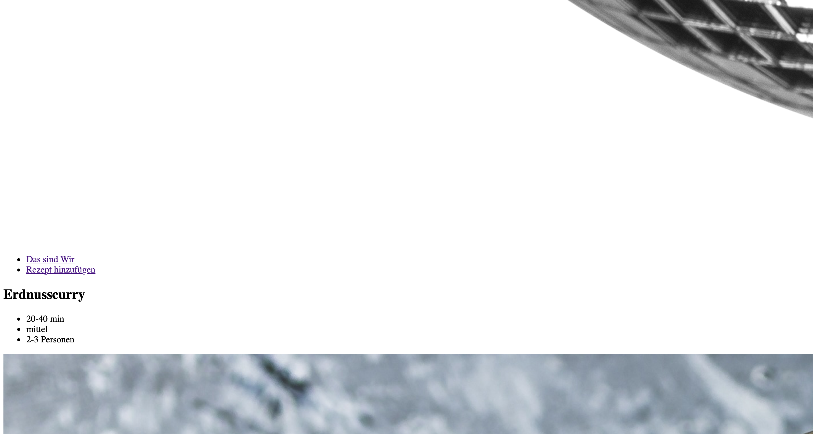
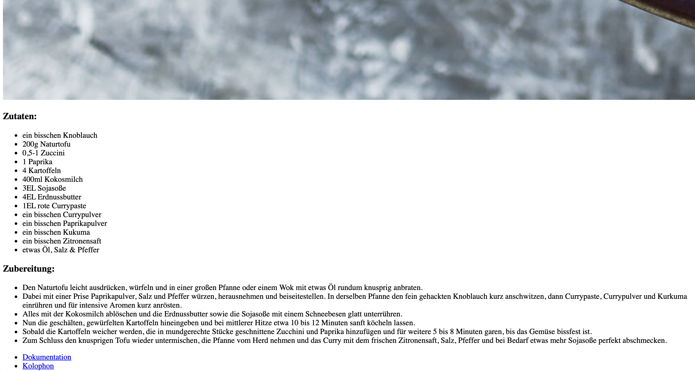
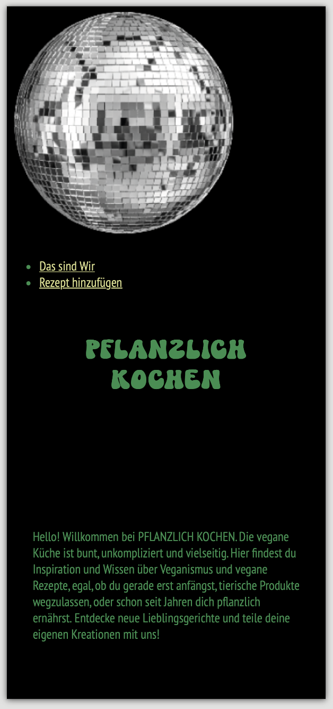
Hier haben wir angefangen unseren Header zu erstellen. Es sind schon alle Elemente vorhanden, aber noch nicht korrekt angeordnet.
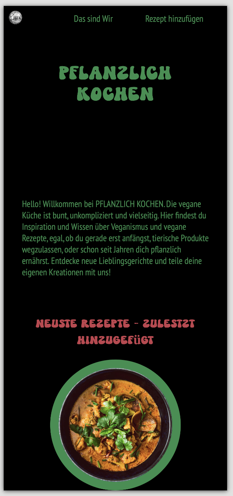
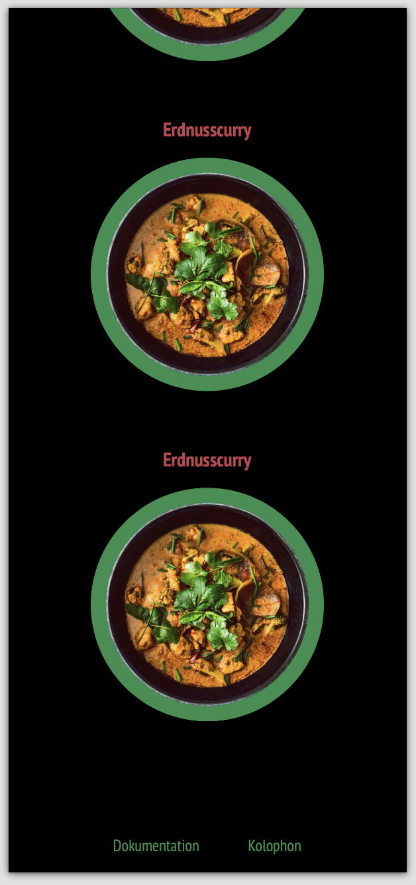
Die Anordnung im Header und Footer haben wir mit "display: grid" erzeugt, damit die einzelnen Listenelemente nebeneinander angeordnet werden können. Den Bildern haben wir eine Border mit "border-radius" gegeben, damit sie sich mehr vom Hintergrund abheben und wir noch einmal mehr Farbe mit ins Spiel bringen. Den Radius haben wir auf 50% gesetzt um einen Kreis zu bekommen. Damit sich die Bilder nicht verzerren, haben wir diese vorher zu einem Quadrat geschnitten. Zudem hat jedes Bild einen Titel, hier die Rezept-Namen, bekommen. Diese stehen in diesem Schritt allerdings noch über dem jeweiligen Bild.
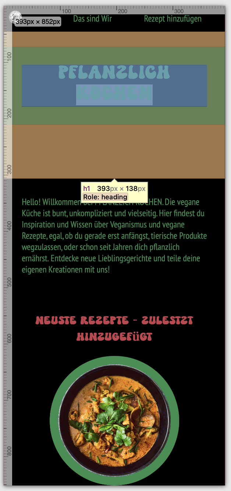
Bei unserem Seitentitel haben wir ein Padding (grün) und Margin (orange) gesetzt, damit sie sich auf dem Bildschirm so angeordnet, wie wir es gerne hätten. Die Zwischenüberschriften haben wir auf der Startseite rot gemacht, um einen Komplimentärkontrast zu erzeugen. Dieser wirkt hier sehr stark, da der restliche Text auf dieser Seite grün ist.
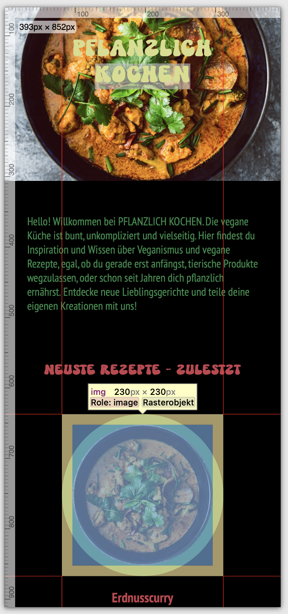
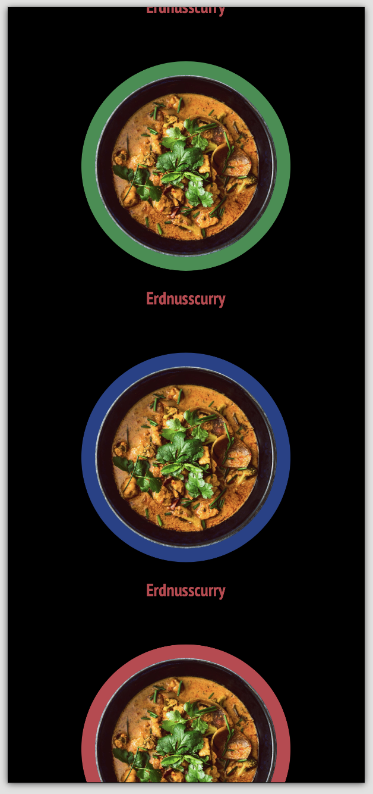
Den verschiedenen Rezept-Blöcken haben wir mit verschiedenen Klassenbezeichnung unterschiedliche Farben zufewiesen. Somit ist nicht mehr alles nur grün und rot, sondern die Seite wurde bunter und hat sich mehr an die Grundidee und unsers Styl-Tiles angepasst.

Wir arbeiten zwar die ganze Zeit noch mit Platzhalter Bildern, aber haben, nachdem wir ein Bild im Banner eingefügt haben, die Farbe unseres Titels geändert. Das Bild im Banner haben wir mit “background-image” eingefügt. Zusätzlich haben wir, damit man die Navigationsleiste noch erkennt, einen leicht transparenten schwarz Ton in den Hintergrund mit “background-color” hinzugefügt.
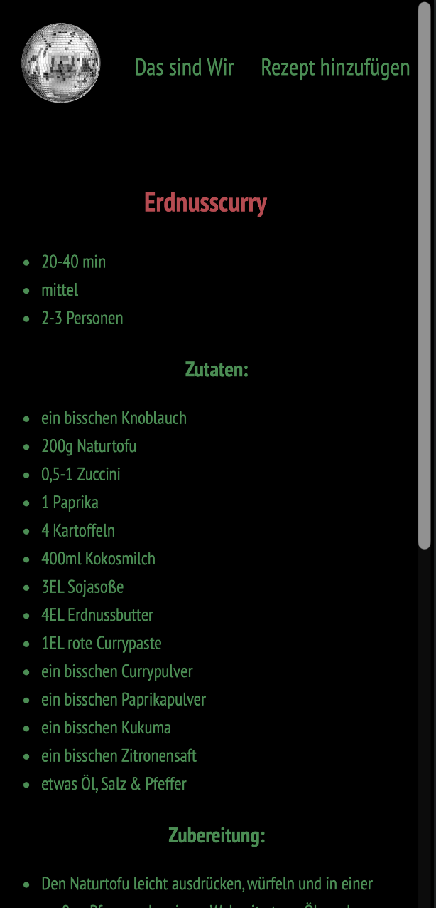
Auf unserer Rezept-Seite haben wir auch zunächst damit begonnen alle Inhalte einzufügen.
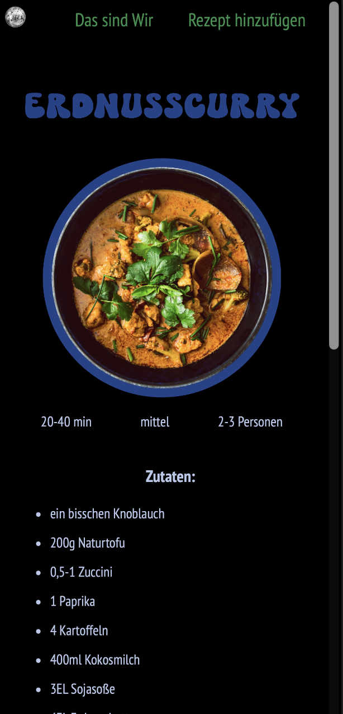
Im nächsten Schritt haben wir das Bild mit dem Border-Design von der Startseite übernommen und alle Texte angeordnet.
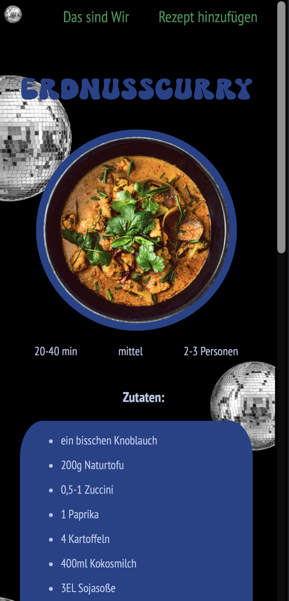
Um die Discokugel weiter aufzugreifen und die Seite noch interessanter zu gestalten haben wir diese auf einem Hintergrundbild mehrmals eingefügt. Dies führte dazu, dass die Schrift teilweise nicht mehr gut lesbar war, weswegen wir uns dazu entschieden haben, die Betroffenen Texte mit einer Hintergrundbox zu versehen.